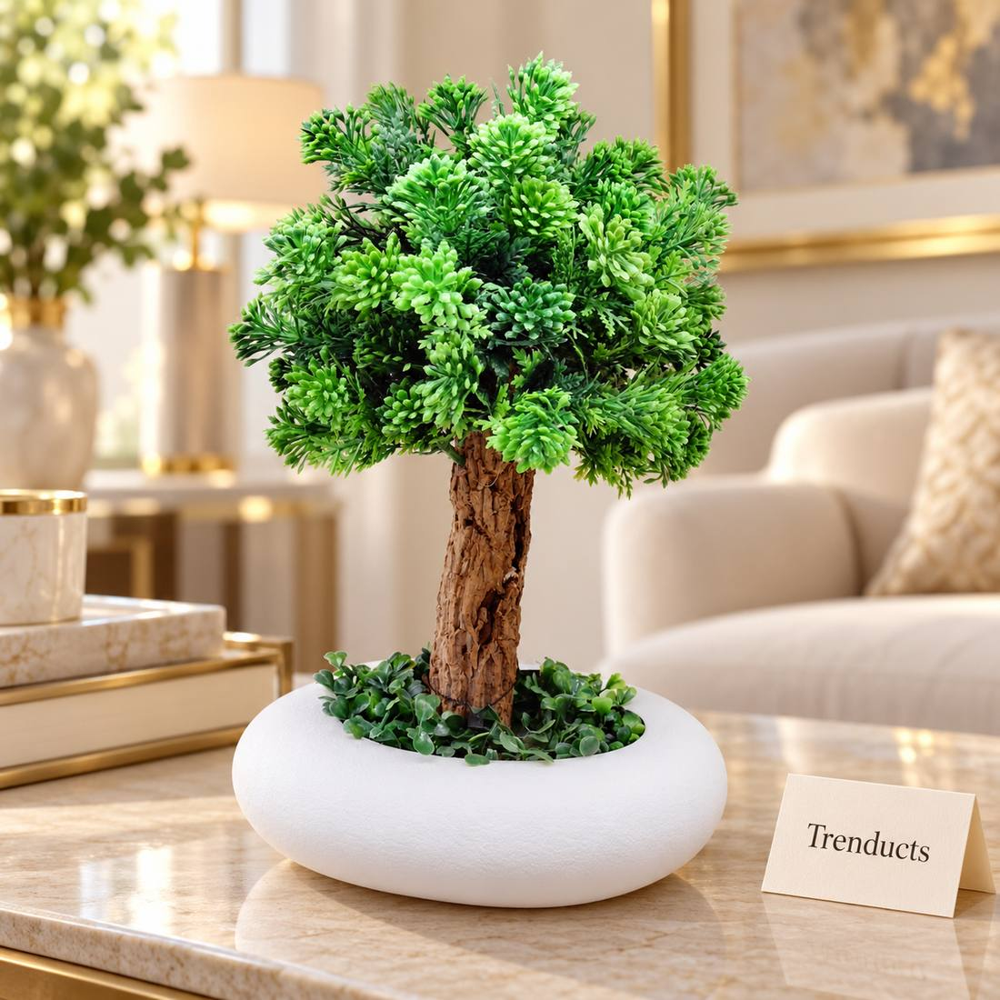
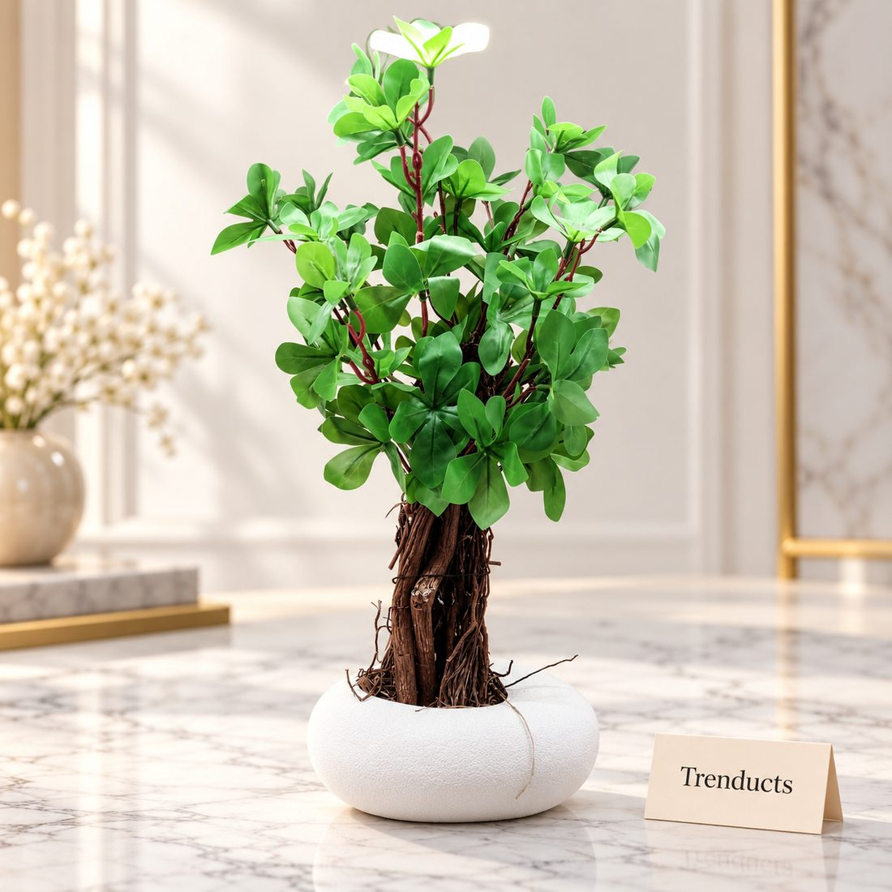
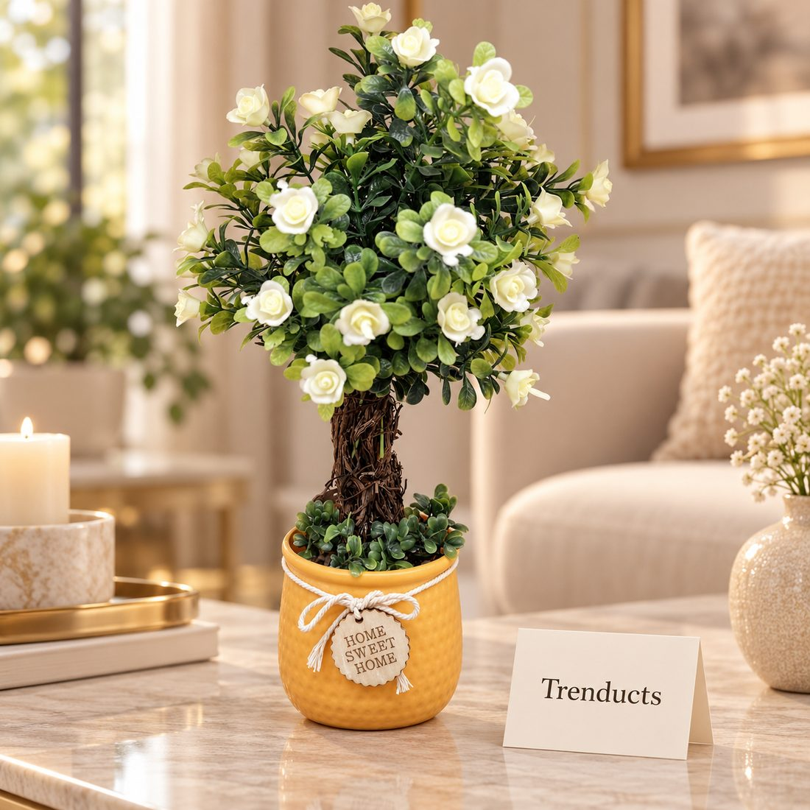

How to use artificial plants to bring greenery into low-light flats and rooms in Pakistan, with tips on choosing realistic pieces, placement and care.

Plants make any room feel calmer and more alive. But many flats in Pakistani cities face a problem: limited sunlight. Apartments facing an inner courtyard, ground-floor units shaded by neighbouring buildings and interior rooms without windows can be too dark for most houseplants. Add dusty air, busy schedules and long trips home to family in another city, and keeping real plants alive becomes a struggle.
Artificial plants have improved a lot. Chosen well and placed thoughtfully, they bring the look of greenery into spaces where real plants would wilt.
In bright spaces with good sunlight, real plants are often worth trying first. Many homes end up with a mix of both.
The difference between a convincing artificial plant and an obviously fake one comes down to a few details:
A tiny plant on a large table gets lost, while a big plant in a small room overwhelms it. Use a larger plant in a corner to soften sharp lines, a medium plant on a side or console table, and small plants on shelves or the dining table.

Place plants where real ones might plausibly grow, near a window, in a corner or on a sill. Odd placements, like deep inside a dark cupboard, give the game away.
Artificial plants do not need water, but they do collect dust, especially in Pakistani cities. Dust dulls the colour and is the main reason they start looking fake. Once a week, wipe leaves with a soft dry cloth or use a hairdryer on cool setting to blow dust off. Every few months, rinse plants that are suitable for it with water and let them dry fully.
Keep artificial plants out of strong direct sun, which can fade colours over time.
If you have a sunny window in one room, grow a few hardy real plants there, such as a money plant, snake plant or aloe vera, and use artificial ones in darker rooms. This gives you the life of real plants where they can thrive and the convenience of artificial ones elsewhere.

Artificial flowers are easy to change with the seasons or occasions. White roses for a wedding season, bright blooms for Eid, and simple greenery for the rest of the year keep the home feeling fresh without new purchases each time.
Plants look best near natural materials like wood, rattan and stone. Pair a plant with a lamp and a small stack of books on a side table for a pleasing vignette. A plant beside a mirror doubles its impact.
For bonsai trees, leafy plants in pebble pots and flowering topiary pieces, browse the decorative and showpiece range at Trenducts.pk, delivered across Pakistan.
A dark flat does not have to feel gloomy. With a few well-chosen artificial plants, kept dust-free and placed with care, you can enjoy greenery in every room, whatever the light.